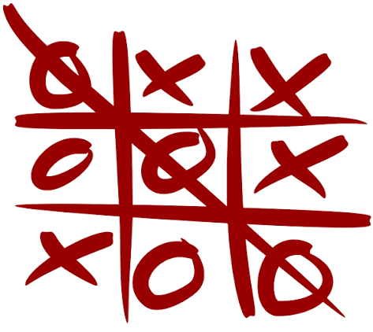
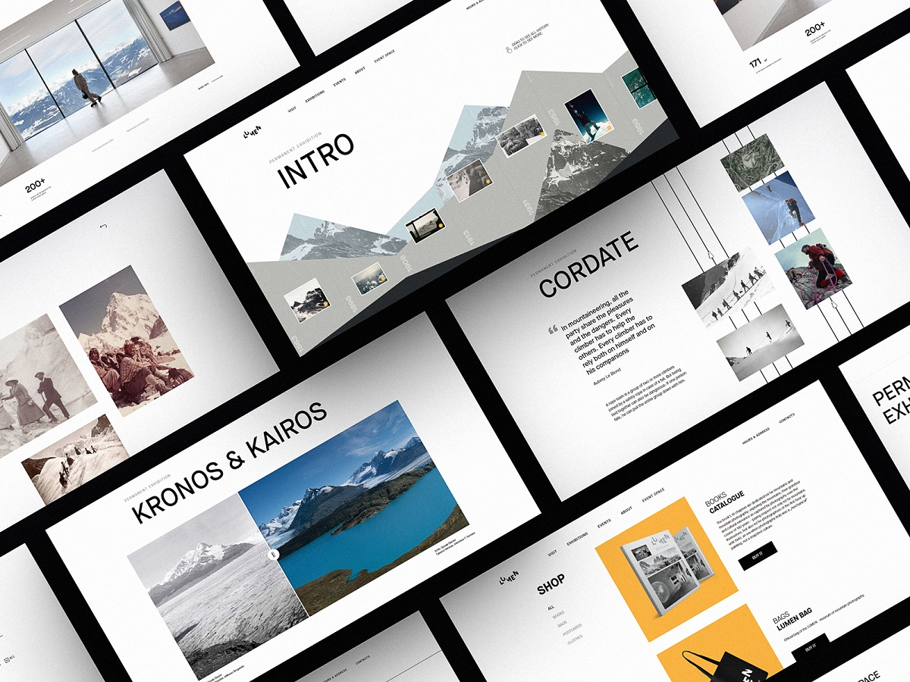

01 / Tic Tac Toe
C#
A Tic Tac Toe játék programjának megírása C# nyelven.
PORTFOLIÓ
Junior Webfejlesztő
„Kódolok. Tanulok.”
01

Szia! Tamaskó Szabolcs vagyok, junior webfejlesztő.
Jelenleg a Szoftverfejlesztő és tesztelő képzés keretében bővítem programozási és webfejlesztési ismereteimet.
Leginkább modern, letisztult és felhasználóbarát weboldalak készítésével foglalkozom. Szeretem az új technológiákat megismerni, és minden projektből valami újat tanulni.
Célom, hogy a megszerzett tudásomat valódi projektekben is kamatoztassam, és folyamatosan fejlődjek webfejlesztőként.
02
Weboldalak készítése.
Modern és reszponzív weboldalak formázása.
Alapszintű programozási és webes ismeretek.
Programozási alapok és egyszerű alkalmazások.
Adatbázisok kezelése és SQL lekérdezések.
C# alapszintű programozási ismeretek
03

01 / Tic Tac Toe
A Tic Tac Toe játék programjának megírása C# nyelven.
02 / Flappy Bird
Flappy Bird-höz hasonló játék elkészítése C# nyelven.

03 / WEBOLDAL
Letisztult, strukturált weboldalak.
04
Van egy ötleted vagy projekted?
Keress bizalommal az alábbi elérhetőségek egyikén!